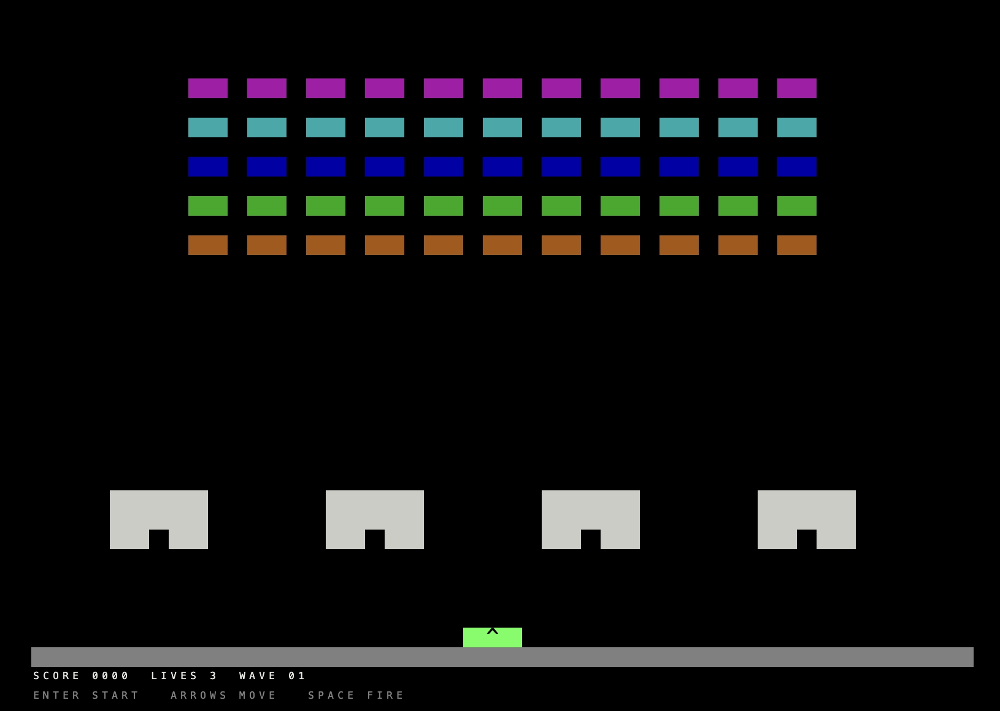
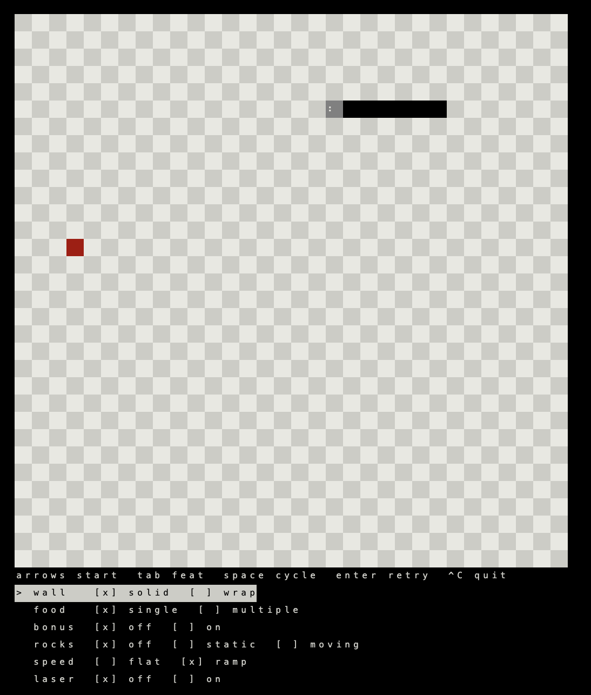

A TypeScript engine for games made of cells. tick updates the grid,
view draws it. One App runs on a canvas and in a terminal.

enter start · arrows move · space fire
arrows start · tab feat · space cycle · enter retry